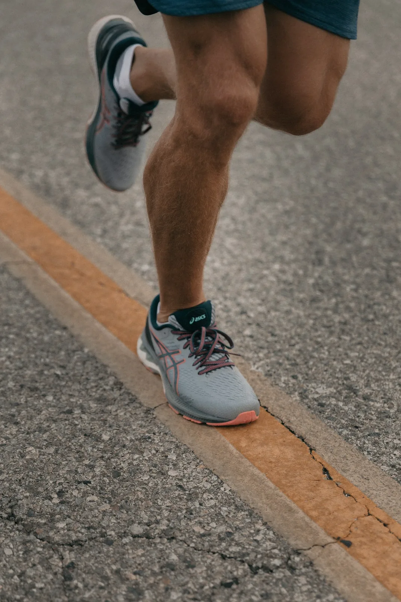

Laudo de pisada · modelo
Veja como seu pé pisa antes de tratar a dor.
- Exame
- baropodometria
- Sensores
- 4.096
- Duração
- 30 s parado · 10 passos
01 · O tênis que você usa
Traga o tênis do dia a dia: o desgaste da sola mostra a pisada de meses.
02 · Mapa de pressão
03 · Resultado
- Peso no lado de dentro
- —
- Peso no calcanhar
- —
- Pico de pressão
- —

Pisada parada e andando, vídeo em câmera lenta, testes de força e laudo em PDF com o plano e a palmilha.